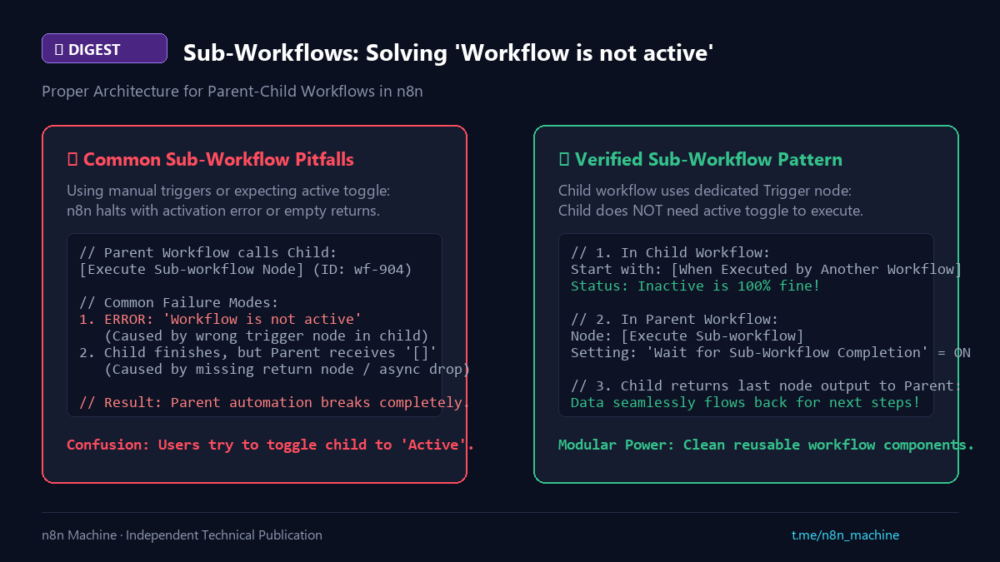

Digest
Sub-Workflows: Solving "Workflow is not active"
- Published
- Checked against
- docs.n8n.io
- Status
- Original

How to build modular workflows without activation errors.
01The "Workflow Not Active" Trap
- Symptom:
Execute Sub-workflownode throws Workflow is not active and cannot be executed, or returns empty data. - Why: Using a Manual or Webhook trigger inside the child workflow instead of the dedicated execution trigger.
02The Clean Sub-Workflow Pattern
- In Child Workflow:
Start with the When Executed by Another Workflow trigger node.
Child workflow status does NOT need to be Active! It can stay Inactive.
- In Parent Workflow:
Use Execute Sub-workflow node and enable Wait for Sub-Workflow Completion.
Sourcen8n Sub-Workflows Docs